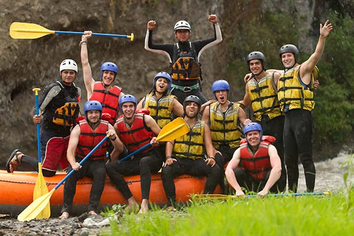

Nossa História
A Rio Abaixo Rafting começou com um pequeno grupo de apaixonados por rios e esportes ao ar livre. Com o tempo, reunimos guias qualificados, aprimoramos nossos equipamentos e construímos uma reputação baseada em segurança e diversão.

Hoje, recebemos famílias, iniciantes e aventureiros experientes para explorar as melhores rotas de corredeiras da região.